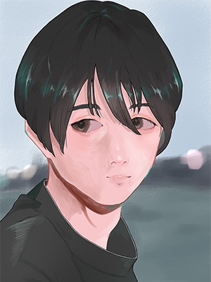
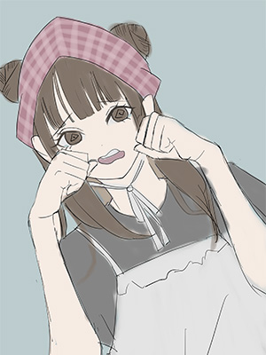
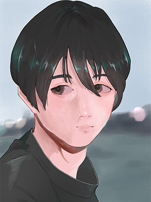
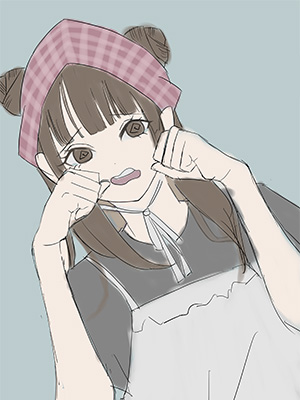
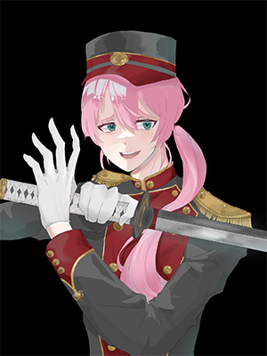
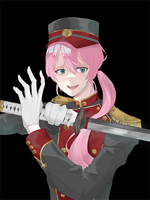

自主制作イラスト
自分の内にある思いを、最も適したアプローチで表現すること。
そのために試行を重ねる点が、絵を描くこととデザインの共通点だと考えています。
私は幼いころから絵を描くことが好きでした。
理由は、描いた絵を通して周囲の人が喜んでくれたからです。
保育園の先生、母親、友達...私が絵を描く背景には、いつも「見てくれる人」の存在がありました。
これからはデザイナーとして、受け取り手の視点を大切にし、
見る人の心を動かす表現ができる存在を目指していきます。
 



 
